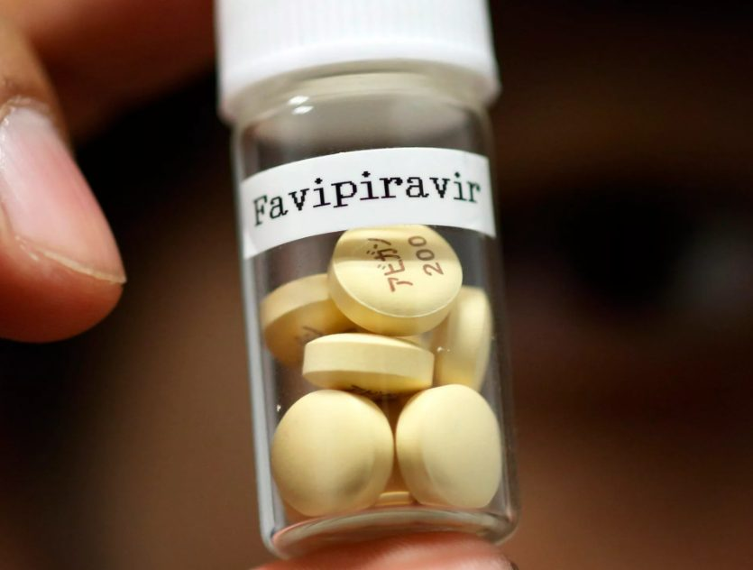
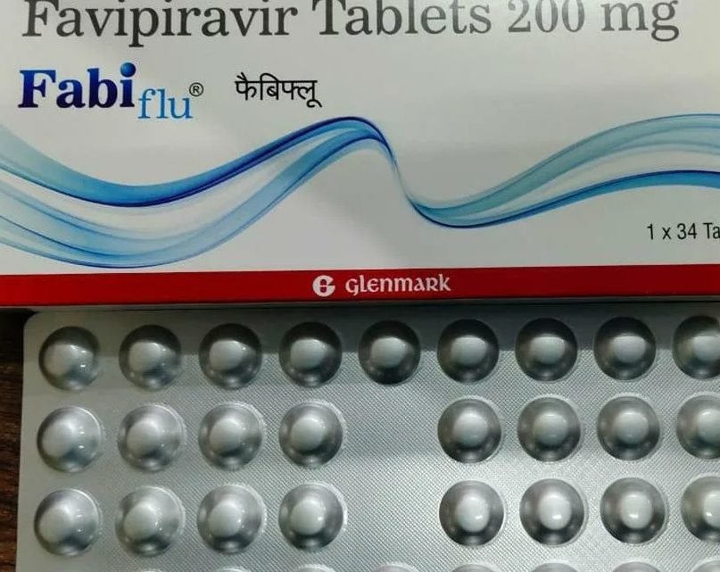
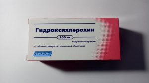
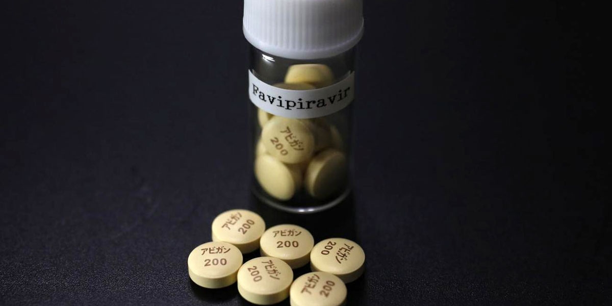
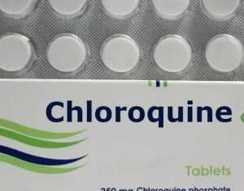
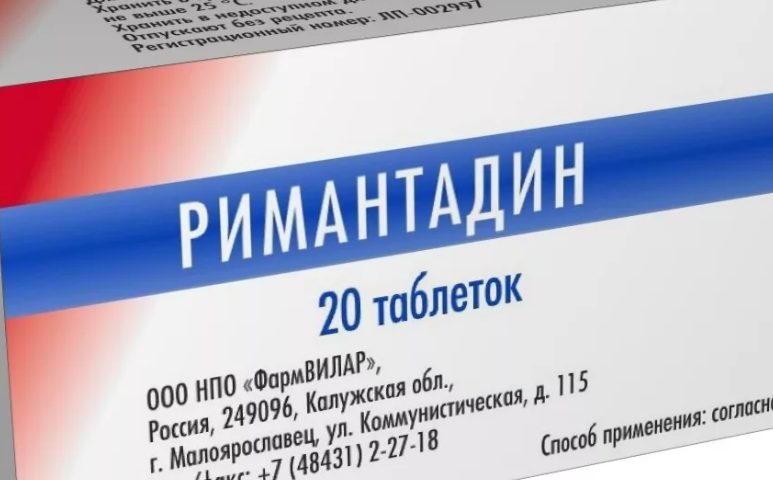
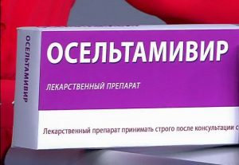
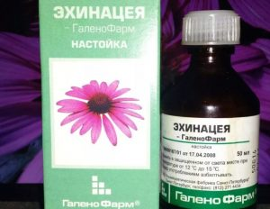
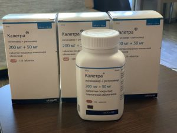
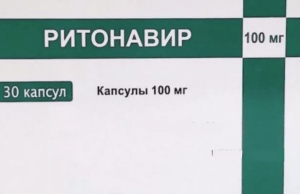

Эффективность препарата Фавипиравир при коронавирусе

Содержание:
Фавипиравир — противовирусное средство, которое эффективно на любой стадии коронавирусной инфекции.Препарат ингибирует вирусную РНК-зависимую полимеразу и индуцирует летальные трансверсии РНК, производя нежизнеспособный фенотип.Медикамент прошел клинические испытания, которые доказали его эффективность при COVID-19.
Лекарственное средство разработано и зарегистрировано японской компанией Toyama Chemival в 2014 г. Изначально этот препарат испытывали в качестве средства для лечения гриппа и лихорадки Эбола.Лекарство показало хорошую эффективность против вирусов, которые имеют в своем строении РНК.



Читайте такжеЭффективность Гидроксихлорохина при коронавирусе Гидроксихлорохин является одним из самых распространенных препаратов, которые начали использовать для лечения COVID-19.Специалисты рассказывают о правилах применения Гидроксихлорохина при…
Активное вещество — фавипиравир.Также в составе присутствует:
В состав пленочной оболочки входит:
Важно!Форма выпуска препарата — таблетки 100 и 200 мг.

В 2020 г. в Китае было проведено клиническое испытание препарата.Одной группе пациентов давали Фавипиравир, другой — Лопинавир и Ритонавир.Установлено, что в первой время до элиминации вируса составило 4 дня.Это значительно меньше, чем во второй группе — вирус начал выводиться из клеток только спустя 11 суток.
В этом же году клинические испытания провели и в России.Для участия была создана группа из 168 пациентов с легким и среднетяжелым протеканием COVID-19.Установлено, что препарат:
По итогам исследования решили, что Фавипиравир можно принимать только для лечения в стационаре.Использование препарата требует строгого контроля со стороны врачей.В частности, медикам рекомендовано следить за уровнем мочевой кислоты и активностью ферментов печени.
Фавипиравир является пролекарством — после попадания в организм активное вещество метаболизируется до рибозилтрифосфата.Препарат показывает максимальную эффективность при лечении коронавирусной легкой и средней степени тяжести.Данные о том, как он действует на пациентов с осложнениями, отсутстсвуют.
Важно!Доказано — чем раньше будет начато лечение, тем быстрее произойдет элиминация вируса.
После попадания в организм, активное вещество фавипиравир всасывается в кишечнике.Связывание с белками плазмы составляет 54%.Соединение выводится почками в виде активного метаболита гидроксилата, небольшое количество — выходит в неизменном виде.Активное вещество не накапливается в организме, не вызывает привыкания и синдрома отмены.
Фавипиравир принимают внутрь, за 30 мин.до еды.Таблетку проглатывают не разжевывая и запивают большим количеством воды.Частоту приема и дозировку определяет врач исходя из тяжести заболевания, возраста и массы тела пациента.Как пить Фавипиравир против коронавируса согласно стандартной схеме:

Общая продолжительность терапии составляет 10 суток.Лечение можно прекратить и раньше, если наступит элиминация вируса.Для ее определения необходимо сделать 2 последовательных ПЦР-теста, с разницей в 24 ч.

Лекарство назначают с осторожностью — имеется обширный список противопоказаний:
Препарат нельзя назначать беременным женщинам.При испытании лекарства на животных установлено, что Фавипиравир вызывает нарушения развития и гибель плода.Поэтому медикамент нельзя назначать даже при подозрении беременности.Состав также оказывает негативное влияние на сперму, поэтому на время приема лекарства е стоит планировать зачатие.
Препарат имеет большой перечень побочных эффектов:
Важно!Побочные эффекты возникают редко.
Доказано, что потенциальная польза препарата выше, чем риск негативных реакций со стороны организма.У большей части пациентов тест на коронавирус показывает отрицательный результат уже на 5-7 сутки лечения.
Препарат имеет несколько аналогов по составу:
Сходным свойством обладают препараты
Однако данные об их эффективности при лечении коронавирусной инфекции отсутствуют.Поэтому, целесообразность замены и конкретный препарат, который будет принимать пациент вместо Фавипиравира, определяет врач.
Стоимость препарата отличается в зависимости от региона и торговой политики аптечной сети.В среднем, Фавипиравир можно купить за 11000-13000 руб.Стоимость дженериков составляет 6000-9000 руб.Перед покупкой рекомендуют произвести мониторинг цен.Выгоднее приобретать упаковки с большим количеством таблеток, но надо учитывать продолжительность курса лечения.

Согласно рекомендациям Минздрава, Фавипиравир назначают, если консервативная терапия не оказывает должного эффекта — состояние больного ухудшается, коронавирусная инфекция переходит в более тяжелую форму или есть риски осложнений.Препарат достаточно эффективен при COVID-19, но у него есть и недостатки — много противопоказаний, высокая стоимость, лекарство трудно найти в аптеке.Поэтому не стоит начинать курс лечения Фавипиравиром без прямого назначения врача.
Posted On: 2021-04-04T21:00:00


Content Date: 2021-04-04
Download Date: 2021-06-20
Document ID: L0C04CWZF